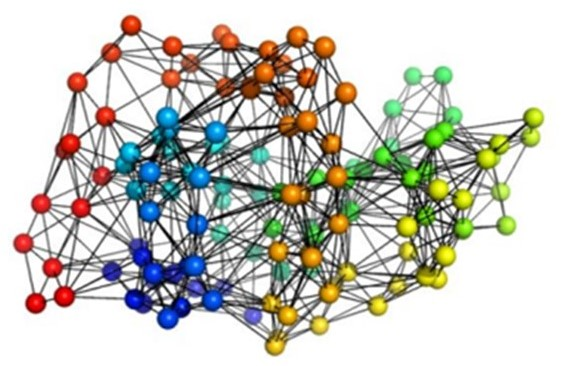
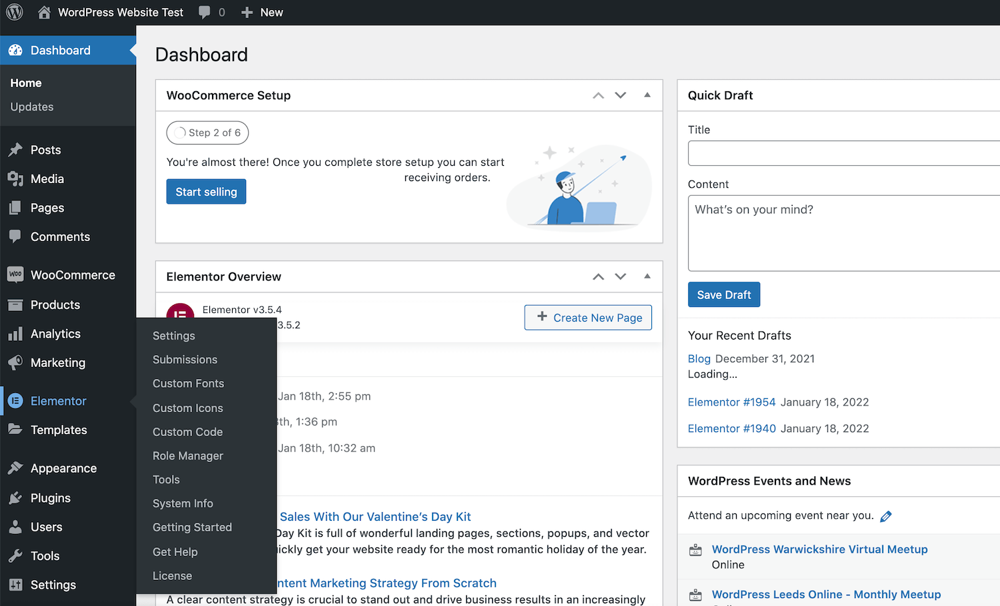
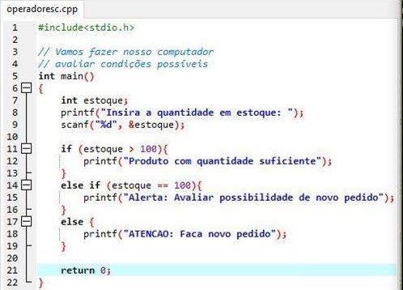
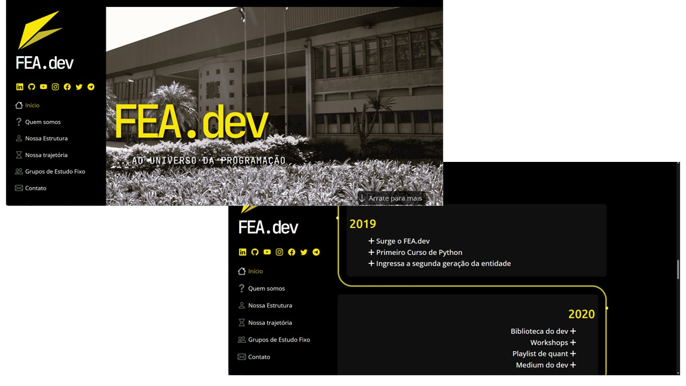

-
2011 - Formatura em Química pela USP
Conclui a graduação em Química pela USP, com prêmio de melhor aluno do bacharelado. Entrei no programa de Doutorado Direto em Bioquímica (1ªcolocada).

-
2015/2016 - Divulgação internacional
Participei de congressos internacionais e publiquei
artigos sobre a minha pesquisa.

-
2017/1sem - Casamento
Casei um pouco antes de defender a tese. Foi um momento muito especial! Iniciou uma nova fase de vida, de muito apoio e cumplicidade.

-
2017/2sem - Defesa de doutorado
Defendi a minha
tese de doutorado. Foi um momento único, que encerrou um ciclo de muito aprendizado.

-
2018 - Início da docência
Comecei a dar aulas no Instituto Federal de São Paulo, e posteriormente em outras instituições.

-
2019 - Novos horizontes
Neste período, trabalhei no cursinho Objetivo Guarulhos, e além de dar aulas participei da divulgação, gerando conteúdo e inserindo no site feito em WordPress com Elementor.

-
2021/1sem - 1º curso de Programação
Fiz o curso de Introdução à programação em linguagem C, pelo IME-USP. Lá percebi que gostava muito de programar e comecei a estudar mais sobre a área.

-
2021/2sem - Início da graduação em TI
Comecei o meu curso de graduação de Bacharelado em Tecnologia da Informação pela UNIVESP, para aprender as bases da computação.

-
Hoje - Desenvolvedora e estudante
Atualmente, desenvolvo alguns pequenos projetos, faço cursos e estou finalizando a minha graduação. Além disso, continuo atuando como professora, de química e de STEM.
